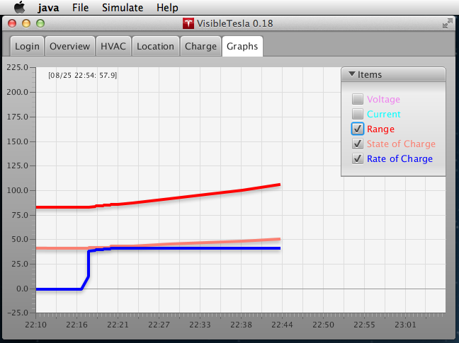
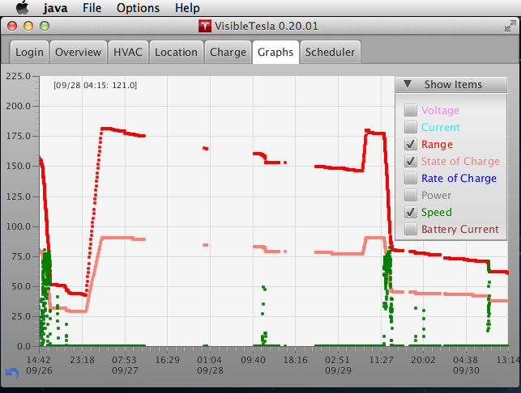
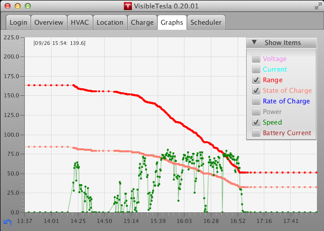

The Graphs Tab
This tab tracks and graphs basic statistics about your car as a line chart. The x-axis represents the time at which the stats were gathered and the y-axis represents the values. An "Items" drop down list allows you to select which statistics are displayed. It also gives a color-coded legend so you can tell which line represents which value. If you deselect a particular item it will not be displayed, but the statistics for that item will continue to be gathered.
Note that these statistics are only collected while VisibleTesla is running. If you quit the app the statistics will not be collected until the next time you restart it. If you have selected "Options->Allow Sleeping" and you don't use the app for 15 minutes, it will stop collecting stats. VisibleTesla stores the statistics it collects. If you quit the app and restart it later, it will display the old statistics and newly gathered ones.
You can interact with the line chart in several different ways:
- Panning: If you wish to move the view forward or backward in time, simply grab the chart (mouse-down) and drag it to the right or the left. To pan the chart up or down, press the CTRL button while dragging the mouse. If you want to pan in both directions simultaneously, hold the SHIFT key while dragging.
- Zooming: If you wish to change the time-span that is displayed (zoom in on a small range of time or zoom out to a large range of time) spin the scroll-wheel on your mouse up or down. To zoom in or out on the value (y) axis, press CTRL while scrolling. To zoom both axes simultaneously, press SHIFT while scrolling. When zooming, the app does so relative to the current mouse location. That is, the chart will seem to expand around the point under the mouse pointer.
- To select which statistics are displayed, click on the arrow to expand the "Show Items" dropdown. Select or deselect the statistics as desired.
- The app remembers which variables you have selected. For example, say you start the app, deselect Voltage, then quit the app. Next time you launch, it will remember that it shouldn't display Voltage. Statistics are collected for all items whether they are selected or not.
- In the lower left corner of the chart there is a reset button (backward pointing arrow icon). Clicking the button will recenter the chart with the current time at the center. This can be useful if you scroll way out and loose track of where you are in the chart.
- To see more data at once, simply the grow the window. The graph will expand and scale to fit.
- To determine the specific value at any point in the graph, move your mouse over the spot to be measured. A readout in the upper left corner of the chart is updated to display the time and value corresponding to the location of the cursor.
The Graphs tab also allows you to select how you would like the information displayed. It can display a line chart, a line chart with markers (dots) at the points where readings were taken, or both. The default is to display both. You can choose your display option by bringing up a context menu on the chart. To do this, press the secondary mouse button (usually the right button) when the mouse is over the chart. A menu will appear with the three display choices (lines, markers, or both). Once you choose an option it will be remembered and used the next time you start the app. You'll notice that if you choose the "both" option, the lines will be thin and semi-transparent to make the markers more visible. If you choose to display only lines, the lines will be more pronounced.
You can export the collected statistics to an Excel file using the "File->Export Stats Data..." menu item. You'll be prompted to choose a location and name for the exported file. Be sure to use the extension ".xls".

When you open an exported file in Excel, you'll see a column corresponding to the time at which each reading was taken and a column for each type of data collected. The time column contains a long, unintelligible number which is an accurate, though obscure, way to keep track of time down to the millisecond. You'll notice that the last column has a version of the timestamp represented as a human-readable date. The table will look something like this:
| TIMESTAMP | C_AMP | C_BAM | C_EST | C_ROC | C_SOC | C_VLT | S_PWR | S_SPD | |
|---|---|---|---|---|---|---|---|---|---|
| 1377743292 | 0 | 99.7 | -1 | 55 | 0 | 24 | 14 | 8/28/13 18:28:12 | |
| 1377746306 | 0 | 99.3 | -1 | 50 | 0 | 21 | 16 | 8/28/13 19:18:26 |
You may notice that some entries are blank. This is normal and can happen for a number of reasons. For example, the car may not have provided readings for that statistic at that time. The following screenshots show the Graphs tab in a number of different states. The first displays the "Show Items" dropdown list open with some items selected and others deselected.
The next screen shot shows the context menu which controls the appearance of the graph.

In this screen shot you can see how "Markers Only" mode makes it easy to spot gaps in the data.
When you select "Lines and Markers" mode it makes it easier to follow trends while still seeing the actual samples.
If you have accumulated a lot of data it can take some time to load the Graph. While the data is loading, you may see your mouse pointer change into the "busy" image. Depending on what system you're using, this might be an hourglass, a spinning beachball, a spinning circle, or something similar. Once the data is loaded into the graph, your pointer will revert to it's normal image. You can control how much data is loaded via a setting in the General section of the Prefs Tab. Choosing to load the last 14 days of data is a reasonable option.